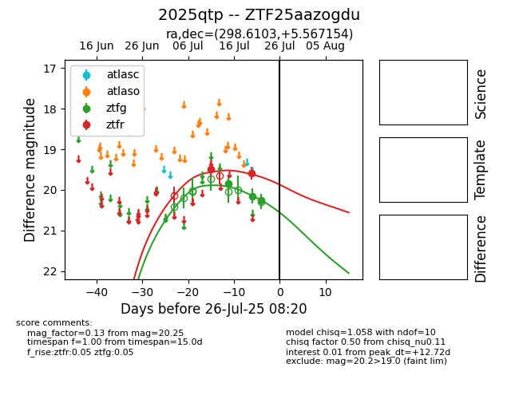

Target 2025qtp at 2025-08-05 23:02, see:
FINK: fink-portal.org/2025qtp
Lasair: lasair-ztf.lsst.ac.uk/objects/2025qtp
ALeRCE: alerce.online/object/2025qtp
TNS: wis-tns.org/object/2025qtp
YSE: ziggy.ucolick.org/yse/transient_detail/2025qtp
alt names
ZTF25aazogdu (ztf,fink)
2025qtp (tns,yse)
coordinates:
equatorial (ra, dec) = (298.6103,+5.56715)
galactic (l, b) = (45.2705,-11.31577)
photometry
last ztfg=20.25, ztfr=20.08
3 ztfg, 3 ztfr detections
